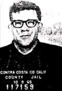
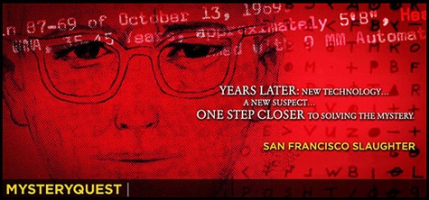

Richard Gaikowski

I learned of Richard Joseph Gaikowski (aka Dick Gyke) because of the informant known as Goldcatcher, who had met Gaikowski back in 1969 and eventually grew to suspect him of being the Zodiac killer. This has been an ongoing investigation at Zodiackiller.com since Goldcatcher made contact with me in early 2008. Information about Gaikowski has been flooding in, including amazing photos, audio and Zodiac-like handwriting samples. Most of what is detailed below is new information and was unknown to the investigators who briefly scrutinized Gaikowski as a Zodiac suspect in 1986.
Below: Click to watch a documentary about Gaikowski featuring criminalist Paul Holes.

*Gaikowski was born in Watertown, S.D. on March 14, 1936. He attended nearby Webster High School and then Northern State Teachers College in Aberdeen, S.D. He died of cancer in San Francisco on April 30, 2004.
*Gaikowski served a stint in the Army during the 1950s. It is known that Gaikowski was trained as a medic. Medics were trained to tear the clothing of a bleeding victim to use as bandages if they did not have access to the proper equipment. Undershirt first, then shirt, then pants if necessary. That is the order of cleanliness, with the shirttail being preferred if tucked in. (Zodiac tore off a portion of a victim's shirttail.) Unfortunately, since 80% of such records were destroyed by fire in 1973, not much more is known about Gaikowski's military career.
{kind=link}
*In October 1965, Gaikowski was intentionally arrested for refusing to sign a traffic citation following a routine stop in Contra Costa County (Calif.). As an investigative reporter for the local newspaper, Gaikowski's goal was to write a story about the conditions within the county jail from the perspective of an inmate. Following his brief stay in jail, Gaikowski's mugshot was published along with his story. However, by the time Gaikowski became a Zodiac suspect more than 20 years later, records of his fingerprints were long gone, making a comparison to Zodiac's fingerprints impossible without either Gaikowski's consent or a court order. There is no evidence either happened. — More info
{kind=link}
*At the time of Gaikowski's intentional arrest, he was living less than five miles from the Zodiac killer's first eventual attack, a double murder at isolated Lake Herman Road.
*Eventual Zodiac victim Darlene Ferrin of Vallejo, Calif. got married on Jan. 1, 1966 and moved to Albany, NY. Gaikowski quickly followed, moving cross country from Martinez, Calif. (near Vallejo). Ferrin's husband worked at the Albany Times-Union newspaper; Gaikowski worked in the same building at the rival Albany Knickerbocker News. In August 1973, four years after Ferrin was killed by the Zodiac, the Times-Union received a letter from someone claiming to be the Zodiac. When solved, the cipher that was included with the letter made reference to the Albany Medical Center.
{kind=link}
{kind=link}
{kind=link}
{kind=link}
*In 1969, 1970 and 1971, Gaikowski was a member of an anti-police, pro-violence counterculture newspaper and commune in San Francisco called Good Times, which had a history of radical ideology. During this time, Gaikowski was known to smoke pot regularly and to use heavier drugs such as speed and LSD.
{kind=link}
{kind=link}
*As early as January 1969, the Good Times newspaper was running violent works of fiction that were nearly a blueprint for Zodiac's future crimes.
{kind=link}
*Wednesday was "production day" for the weekly Good Times newspaper, with the staffers working from early in the morning until very late at night to prepare the new issue. Between Zodiac's debut in July 1969 until the Good Times folded in 1973, the Zodiac mailed 15 letters. Never did he mail a letter on a Wednesday, although he did on every other day of the week.
*At the time of his murder, the Good Times "switchboard" was located only yards from the residence of Zodiac victim Paul Stine on Fell Street in San Francisco.
{kind=link}
{kind=link}
*Carol, Paul Stine's sister, recognized Gaikowski as having attended Paul's funeral.
*Stine was killed on San Francisco's Washington Street. Only one Gaikowski was listed in a city directory at that time, Richard's cousin, and she lived on Washington Street. Her birthday was October 11, the very day Stine was murdered by the Zodiac. Stine — a cab driver — was the one victim whom the Zodiac could choose when and where he would be killed.
{kind=link}
*On the very day Zodiac debuted by mailing three "rush to editor" letters to three separate newspapers in the San Francisco area (with each letter containing one third of a code), the Good Times (edited by Gaikowski) just happened to run a cover that was split into thirds. It was the only instance of Zodiac mailing a letter on a Thursday until after the Good Times folded in 1973. Five months later, the Good Times published a three-part code of its own. The Good Times also occasionally ran sensationalistic "Zodiac Killer" headlines that were out of place.
{kind=link}
{kind=link}
{kind=link}
*In articles he published in 1969, Gaikowski had the habit of shortening his last name to four letters and use multiple spellings, such as "Gike" or "Gaik." Interestingly, "GYKE" can clearly be seen in Zodiac's three-part cipher mailed on July 31, 1969. What's more, how Zodiac chose to code the cipher phonetically gives you Gaikowski's full last name.
{kind=link}
{kind=link}
*At the very time the Zodiac wrote his only letter to the Vallejo Times-Herald, Gaikowski's best friend, Bob, worked at that very newspaper.
*Even though the Good Times was a counterculture/hippie newspaper, once Gaikowski came aboard it ran free ads for such unlikely events as performances of The Mikado, a Zodiac favorite. (Zodiac sometimes quoted from The Mikado in his letters.)
{kind=link}
*On March 13, 1971 the Zodiac sent a letter to the Los Angeles Times. Coinciding closely with the mailing, Gaikowski was involuntarily committed to the Napa State Hospital after "going berzerk." He was then diagnosed with a mental illness and began treatment at Mount Zion Hospital in San Francisco. The Zodiac didn't write again for almost three years.
*When the Zodiac reemerged in 1974 with letters referring to recent movie releases, Gaikowski was operating a storefront theater in the Mission District of San Francisco. A film buff, Gaikowski eventually became involved with San Francisco's Roxie Theater.
*Nancy Slover, the police dispatcher who spoke with the Zodiac in July 1969, has identified Gaikowski's voice as being the same as the Zodiac's voice. Click here for an MP3 of Richard talking about Zodiac's codes.
*In 1986, the Napa County Sheriff's Dept. briefly investigated Gaikowski. After urging from Goldcatcher and Pam Huckaby (sister of Darlene Ferrin), Detective Ken Narlow did a background check on Gaikowski and put him under surveillance for a few nights. — More info — Narlow found nothing to warrant further investigation and the matter was dropped. Meanwhile, the California Dept. Of Justice determined that Gaikowski's handwriting had consistencies with Zodiac's handwriting and more samples of Gaikowski's printing were requested. Goldcatcher found printing that he felt could have belonged to Gaikowski, but those samples were determined to not be a match. — More info — There was not enough probable cause for an arrest or search warrant and the investigation ended.
*— Additional info to be added soon. See the Zodiackiller.com Message Board for daily updates.
← Back to The Suspects